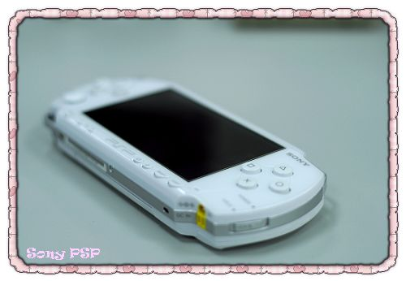
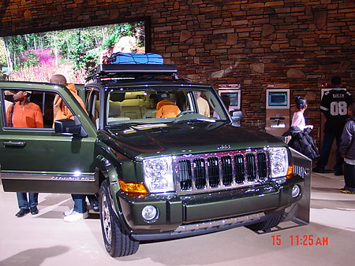
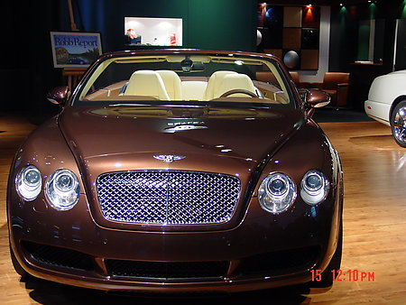
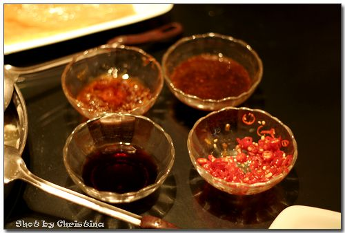

帮人遛狗 @ Jan 24, 2007
广播里讲现在有帮人遛狗的工作，如果现在退休在家我倒是挺有兴趣的。
广播里讲现在有帮人遛狗的工作，如果现在退休在家我倒是挺有兴趣的。
《本能2》一开始凯瑟琳驾驶的那辆SPYKER（世爵）相信会给观者留下深刻印象。早前看过一部有关荷兰SPYKER制造商的介绍，仅有20几个员工，纯手工打造订购豪华跑车。拥有SPYKER汽车的人一般已经拥有宾力、法拉利等顶级跑车，可是这些车仍然不能满足他们的要求，SPYKER帮助他们圆了这个梦。“SPYKER”这个名字对于多数国人来说是极其陌生的，2004年，这家荷兰专业跑车生产商借第八届北京国际汽车工业展览会的契机，正式进入中国市场。中国成都汽车博物馆里目前就有一辆黑色SPYKER收藏。
作为历史超过百年的老厂，一直保持着品牌独特的风格。他们生产的跑车全部为手工打造，具有独特的轻量化车身，采用大排量中置发动机，后轮驱动，多项指标采用F1标准，拥有惊人的性能参数。戏剧性的是它的历史虽然跨越了百年，但是中间却有75年的断层，这是被人称其为“惊世未了缘”的原因。
2004年5月，世爵通过IPO（首次公开发行）的方式上市，5月27日，世爵进入阿姆斯特丹证券交易市场Euronext Amsterdam（股票代码 SPYKER），募集资金1150万欧元，将主要用于提高产能和开拓新市场。此次世爵汽车股份公司（前身为世爵国际汽车控股有限公司）的上市，成为荷兰近3年多来首家IPO的公司。新生的世爵公司和汽车都继承老辈世爵的优良传统，出色的工匠们仍像他们的前辈那样手工打造每一辆汽车， 而且所使用的原材料绝对都是按顾客要求预先订制的全球最优质最独特的材料。如今的新世爵公司旗下共有5款车型，分别是C8 SPYDER, C8 SPYDER T, C8 Laviolette, C8 DOUBLE 12S和C8 DOUBLE 12R。外形上差异不大的它们，每一款都是产量极少的手工打造精品，价格可以高达900万人民币，成为跑车界中独一无二的精品。
新款马自达MX-5硬质顶棚双门跑车将在英国首发，该车型又登上了第九届北京国际车展（Auto China 2006)的展台，实现它在中国的首次亮相。汽车杂志上介绍2005年第三代MX-5车型的全新改版车预计2007年年初进军中国市场，售价在33万人民币。看到这个消息后我的心情无比激动！这款车采用了独一无二的全球首款电动伸缩式硬顶，这种设计完全不会占用后备箱的有限空间。


新款型名称在各地区市场各有不同：
日本：Mazda Roadster Power Retractable Hard Top；
欧洲：Mazda MX-5 Roadster Coupe；
北美：MX-5 (Miata) Power Retractable Hard Top。
马自达于2006年年底发布了一款MX-5专门针对日本国内市场。该车被命名为MX-5 Blaze版，专配了多款特别内饰和外饰。MX-5 Blaze版跑车配置了特别装置，包括：合金铸造BBS车轮、特别版车标、转弯信号、铬合金外饰、铝车舱以及浅褐色皮革内饰。


第三代MX-5在业界同样获得了众多尊贵荣誉，其中包括日本2005－2006年度最佳车型奖、澳大利亚《Wheels》杂志评出的2005年度车型奖、英国广播公司（BBC）旗下著名汽车杂志《Top Gear》评出的2005年度最佳跑车奖、美国《Car and Driver Magazine》杂志评出的2006年十大最佳车型之一和2006年世界最佳车型奖的三个最有竞争力候选车型之一等等。
马自达MX-5三折式电动硬顶敞篷设计，打着12秒内完成开启或收纳的快速，在欧洲为了要让消费者更了解所谓12秒这件事，用网站让网友自己制造小型电影“12 second thriller ”，让你制作12秒的恐怖电影，提供你四种场景，四个别具特色的配角；场景分别是默片场景、美国西部场景、中国武术场景及音乐剧场景，配角分别是外星人、鲨鱼、黑客任务男主角─Leo及殭尸，你可以利用这些场景组合出16组小电影。
全新的MX-5 Roadster Coupe，依照动力引擎与变速系统的不同，共有三种配置，分别为1.8升五速手排、2.0升五速手排与2.0升跑车版六速手档。欧洲马自达建议售价英镑1.821万元起售。
下面是06年夏天在塞班租的马自达MX-5的车：


看到yucheng的MSN签名：“生命需要千锤百炼才有质量”，我立刻听到叮叮砰砰砸铁的声音，人生就是大炼钢铁？！
在《Clerks II》推出之后，必须赶紧看完早已购买的94版的《Clerks I》，想要推荐的理由是电影的对白，一时想不出有哪部电影有如此多且精彩的台词。黑白色彩让影片区别于随大流的表现形式。《Clerks I》绝对是个另类的成功例子。
1994年，24岁的导演凯文·史密斯通过卖掉自己的漫画收藏的钱，加上信用卡和向亲朋好友借来的钱，用16mm的黑白胶片，对白采用现场录音，在自己打工五年的便利店里，邀请自己的工作伙伴作为演员和幕后班底，加上自己、老婆、老妈和好友倾力加盟，拍出了一部令美国青年为之疯狂的另类黑白喜剧片。凯文·史密斯在影片中饰演小店门口卖毒品的Bob，整部电影中没有一句台词，被称为“silent Bob”。这部投资仅2万7千美元的喜剧片，获得了当年的圣丹斯电影节大奖，戛纳的青年评论奖，并在英国权威电影杂志《TOTAL FILM》评选出的50部最伟大的喜剧电影中列NO.16。
IMDB评分高达7.9的《Clerks I》，也被美国许多年青人作为Cult经典追捧多年。片中对于奇怪顾客性事八卦毫无禁忌的露骨调侃，对于多部当红影片的正反两面辩论，以及对于自己人生的自嘲，全片中占90%的这些粗俗尖刻，奇思怪想却又隐含深刻的对白，在令人喷饭不已的同时，也让观者体会到那一代的不少美国青年在不思进取，自甘堕落的同时，却又自以为是，眼高于顶的矛盾心态。
导演凯文·史密斯自1994年传奇式成功之后，一跃成为好莱坞最炙手可热的独立电影人，往后他的作品虽然屈指可数，但《耍酷一族》（Mallrats）、《猜·情·寻》（Chasing Amy）和《怒犯天条》（Dogma），三部片在IMDB评分最低为7.1，口碑甚佳并且意外地阶梯式捧红了一代英俊小生本·阿弗莱克。后来他除了《新泽西爱未眠》（Jersey Girl）后便再无大荧幕作品。此番的《Clerks II》，说它不是导演的野心之作，恐怕也没有人会相信吧。
近日购进白色sony psp，2G卡。
新出色款有银灰和宝蓝色。背面皆为光面，还是喜欢亚光磨砂处理，所以挑了白色。计划中的粉红色，实物效果实在不敢苟同。另外配了款双层便携牛津包，除了装入PSP之外，其它配件均可装入，方便出差旅行时携带。PSP可以读书、玩游戏、看电影、养宠物、听音乐、下载照片，2007年从电子生活开始！



每晚睡前会阅读一会儿新买的书，大约看了20多页就郁闷了，想不到美国人是这样的！作者给我的写作印象有点我姐姐那个年龄层的风格，也有youzi的留言特点：)书中描述美国人的AA制简直让人瞠目结舌。。。。。。
**一家人聚餐各付各的钱；
**A请B吃饭，B带了C去，A付款时只付两份儿即A和B的，C那份儿自己pay；
**夫妻长夜裸睡，海枯石烂，丈夫温情款款...超市买完东西结帐，美国丈夫pay完自己的东西，剩下中国太太床头的一只灯泡由她自己pay；
**某老太太大寿邀请一群朋友庆祝，邀请函上注明餐费自理；
**邀请朋友去酒吧聚会，卡片上写着酒水自理，去了后只提供干果谷类等零食，吃的口干舌躁时纷纷自己掏钱买饮料喝；
。。。。。。今天我用句号来强调省略号以表达我的惊讶与不解。
回想2003年与美国人John结伴背包云南旅行，人家买了白族同胞的炸土豆津津有味站在我边上吃，好象我不存在似的；翻山越岭你不求助人家不会主动搀扶，人家说那是尊重女性权利@_@那段旅行留在记忆深处的就是每天算帐。象我这等女中豪杰，在pay上基本不把自己放在弱者位置，甚至还会抢着pay。。。这不仅符合美国文化，还有超越之势，可是。。。可是。。。我会很计较一只灯泡的问题。国内大多女人怀有小鸟那个依人的柔情，在这里女人活得弱至少能赢得同情，还是中国女人聪明！
去看了DETROIT AUTO SHOW，上次去DETROIT AUTO SHOW 是两年前，今年的AUTO SHOW 明显感到高科技的手段多了，巨大的显示屏幕震耳欲聋的音响，还有各种仿真的驾驶体验，除了高档豪华车，如LAMBORGHINI，FERRARI，ROLLS-ROYCE，BENTLEY，还有很多大众品牌的汽车，无论是MERCEDES，PORSCHE等大众豪华汽车，还是FORD，TOYOTA，GM。。普通汽车都可以坐上去体验一下。
还有一个感受就是亚洲人很多，也知道是中国人，日本人，还是韩国人，吃饭的时候碰到两个女孩说中文，和她们聊了几句才知道她们是东北一家汽车杂志的记者，国内记者和业界就来了50多人。
个性十足的JEEP ($30,000)

体验驾驶MERCEDES跑车的感觉 ($100，000)，这辈子应该有希望买的起

PORSCH 的SUV

LAMBORGHINI ($400，000)

BENTLEY ($220,000)

收到Angie从上海帮偶购买的Nokia 7390 ，因为南京水货市场没有这款手机。感叹：还是大城市好！之前曾考虑过Nokia N72、N73，N72塑料感太重，一圈金属条过于突兀。N73键盘小，材料手感单薄，智能手机容易死机。7390是8倍数码变焦兼自动聚焦功能，300万像素，最大可拍摄2048×1536分辨率的图片，这是吸引我的最主要因素。手机3G功能目前国内还是个摆设，花多余的钱就为了放在那里储备到花儿谢了。有朋友说：“7390黑铜色不是很女性化，蛮中性的。”偶受到7390浅粉色的百般诱惑终究还是选择了耐脏的深色。黑色表面磨砂亚光，没有那种廉价的塑料感，让人欣慰。Nokia的吝啬之处在于永远标配1块电池、1个旅行充电器，永远没有电脑数据线，NND~~偶是Nokia品牌拥护者，除此之外就是使用习惯让偶一直对它偏爱，么办法！
苹果的iPhone国外上市时间是2007年6月，对于iPhone的唯一顾虑是电量持续使用时间，这款从外型到功能都超眩的手机会是很多手机玩家的不二选择。价格还算合理，4G的USD500，8G的USD600，一旦国内销售估计价格上还会多出15%~20%的银子，或许不止。这个畸形的消费市场什么事情都可能发生！买东西有时是心情有时是心跳。偶曾电话咨询过10086，iPHONE的GSM制式国内可以使用。不过要等最先购买的“小白鼠们”的实验结果才能确定其优劣。


